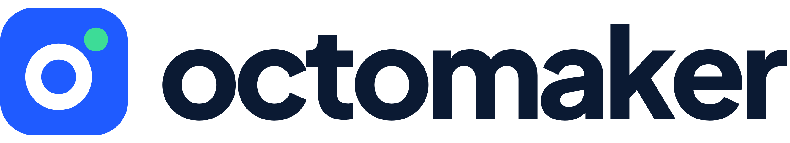
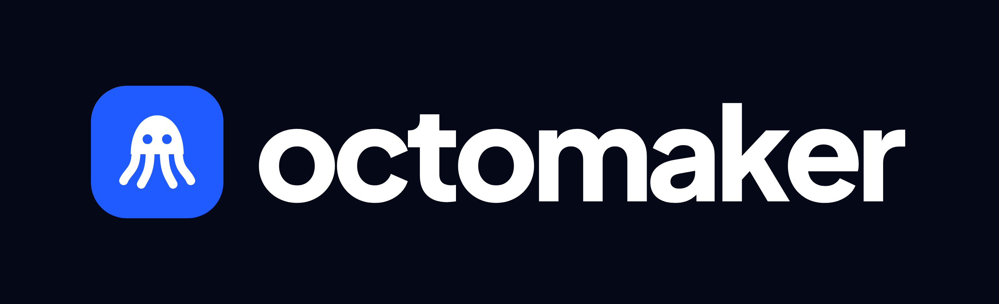
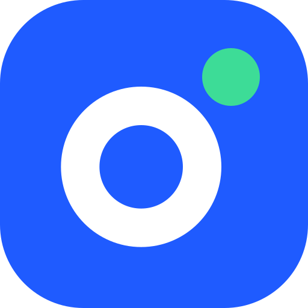
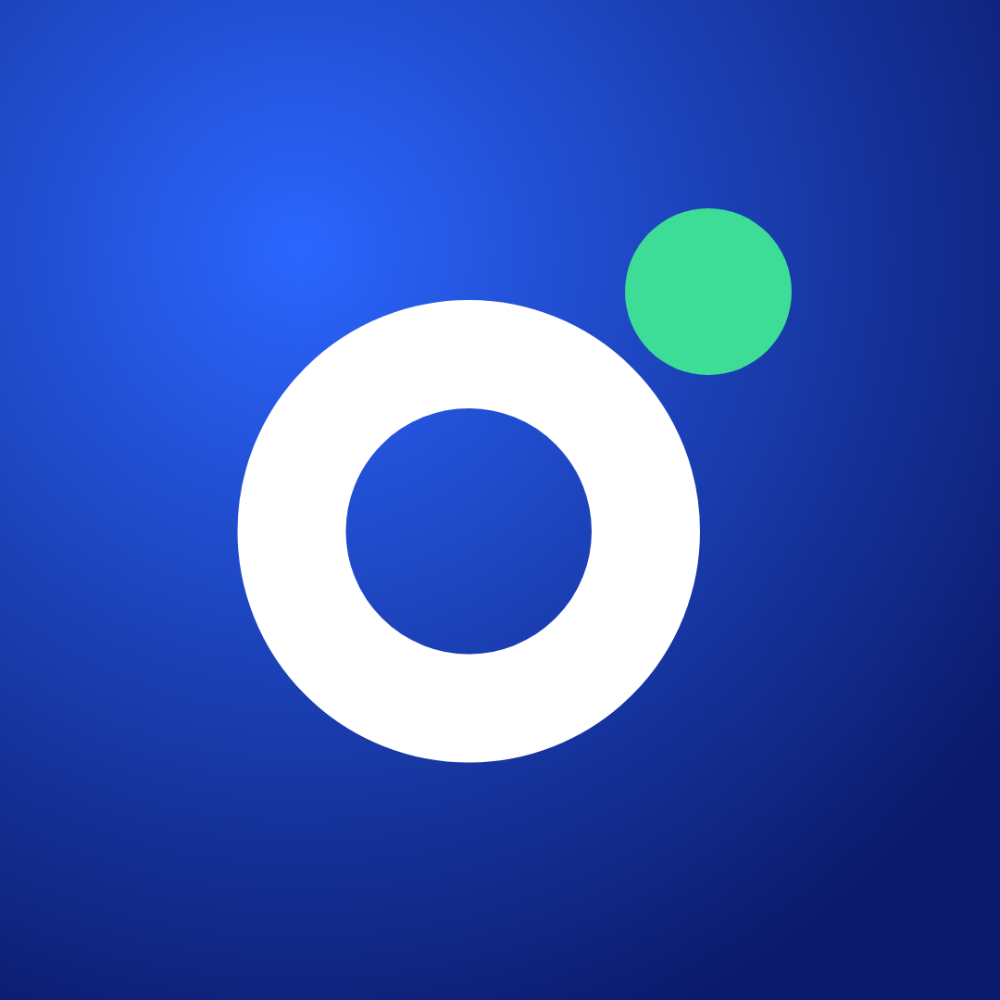

Seu negócio online
O "o"
O símbolo é a letra "o" de octo, desenhada como um anel forte dentro de um quadrado azul. Funciona como ícone de aplicativo e fica nítido até em 16 px.
O ponto verde
O ponto menta é o sinal de "online", o mesmo das conversas no WhatsApp. É o que entregamos: o seu negócio no ar e recebendo mensagens.
Para quem
Donos de pequenos negócios: barbearias, psicólogas, lojas, fotógrafos. Eles querem confiança e resultado, não tecnologia. Por isso a marca não usa código, circuito nem termos técnicos.
Versões do logo
Horizontal · fundo escuro
Versão principal. Arquivo octomaker-horizontal-transparente.png.

Horizontal · fundo claro
Para documentos, propostas e fundos brancos. Arquivo octomaker-horizontal-clara.png.

Com fundo
Já vem com o fundo noite, pronto para enviar. Arquivo octomaker-horizontal.png.

Símbolo
Favicon, ícone de app e espaços quadrados. Arquivos octomaker-simbolo.svg e .png.
Foto de perfil
Instagram, WhatsApp e Google. A rede corta em círculo. Arquivos octomaker-perfil.svg e .png.
Mini
Versão redonda para o selo "Site feito pela octomaker" e tamanhos abaixo de 32 px.
Regras de uso
- Nome escrito no logo: octomaker, tudo minúsculo, em Plus Jakarta Sans ExtraBold.
- Nos textos, escreva OctoMaker. O @ do Instagram continua @octomaker_.
- Deixe em volta do logo um espaço livre igual à altura do anel.
- Tamanho mínimo: 120 px de largura para o horizontal e 16 px para o símbolo.
Não fazer
- Não mude as cores do símbolo nem tire o ponto verde.
- Não use o logo sobre fotos sem uma camada escura por trás.
- Não estique, gire nem aplique sombra ou contorno.
- Não volte com polvo de circuito, "//", "_" ou fonte de código.
Paleta
Textos
Branco #FFFFFF para títulos, #C6D0E6 para parágrafos e #9AA6C2 para textos de apoio. Bordas em #1C2540.
O brilho
O fundo noite ganha manchas suaves de luz azul e índigo atrás dos títulos (degradê radial que some até o transparente). Use no topo das páginas e nos blocos de chamada, nunca atrás de texto pequeno.
Uma fonte só
Plus Jakarta Sans
Gratuita no Google Fonts. Títulos em ExtraBold (800) com letras juntas (−5%). Textos em Regular (400) e Medium (500).
Botões e etiquetas
Botão principal: pílula branca com o círculo azul e a seta. Botão secundário: pílula com contorno. Etiqueta acima dos títulos: pílula com o ponto verde. Cards: fundo painel, borda fina e cantos de 24 px.
Simples e direto
Frases curtas
"Sites que trazem clientes." Uma ideia por frase.
Fale do resultado
Clientes, WhatsApp, aparecer no Google. Não fale de framework, código ou stack.
Sem promessa vazia
Preço e prazo claros: a partir de R$ 300, pronto em até 7 dias.
A marca no dia a dia
Compartilhamento
Aparece quando o link do site é enviado no WhatsApp ou em redes. Fonte em marca/_fontes/og-image.html.

Instagram @octomaker_
Foto de perfil em instagram/perfil/perfil-instagram.png. Os posts seguem o mesmo fundo noite com brilho, títulos grandes em branco e destaque em azul claro.